۱. تنظیمات اصلی افزونه (Main Settings)
این بخش، موتور محرک افزونه است و امکانات پایه، سوئیچهای ماژولهای فعال و تدابیر امنیتی را کنترل میکند.
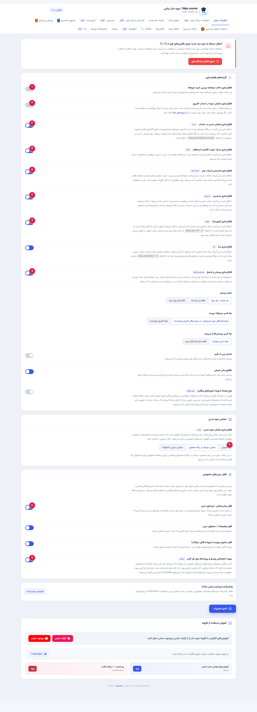
فعالسازی حالت دوجانبه بررسی خرید دورهها
کلید سیستم:nias_two_way_verification
بهصورت عادی افزونه وضعیت پرداخت کاربر را از متای سفارش و پایگاه داده بررسی میکند. در صورتی که هاست شما کش تهاجمی دارد یا برخی کاربران پس از پرداخت موفق به محتوا دسترسی ندارند، با روشن کردن این گزینه سیستم یکبار از طریق جدول سفارشات ووکامرس و یکبار از جدول اعضای دوره استعلام میگیرد تا مشکل عدم دسترسی برطرف شود.
فعالسازی نمایش دوره در حساب کاربری
کلید سیستم:nias_course_account_display
یک زبانه اختصاصی یا لیست استاندارد دورههای خریداری شده را به صفحه «حساب کاربری من» ووکامرس اضافه میکند تا دانشجو بدون جستجو، لیست تمام دورههای ثبتنامی خود را ببیند.
فعالسازی نمایش مدرن در حساب کاربری
کلید سیستم:nias_modern_account
دورههای کاربر را به شکل کارتهای شکیل، مدرن و تعاملی همراه با تصویر شاخص، نوار درصد پیشرفت یادگیری و دکمه ادامه یادگیری به کاربر نشان میدهد. کد کوتاه آن: [nias_purchased_courses]
فعالسازی مدرک دوره با قابلیت استعلام مدرک
کلید سیستم:nias_course_certificate
با فعال کردن این گزینه، منوی اختصاصی تنظیمات مدرک و طراح مدرک ظاهر میشود و امکان صدور گواهینامه معتبر پس از پایان سرفصلها و استعلام آنلاین با شناسه فعال میگردد.
فعالسازی لایسنس اسپات پلیر
کلید سیستم:nias_spotplayer_enabled
ارتباط سایت با وبسرویس پلتفرم قفل ویدئوی اسپاتپلیر را فعال میکند تا برای هر سفارش تکمیلشده، بهطور خودکار کلید لایسنس مجزا صادر و پیامک/ایمیل شود.
فعالسازی مدرسین
کلید سیستم:nias_instructors_enabled
نقش کاربری جدیدی به نام «مدرس» (Instructor) به وردپرس اضافه میکند و بخش مدیریت مدرسان، بیوگرافی و پیشخوان مدرسین را در اختیار شما قرار میدهد.
فعالسازی آزمونساز
کلید سیستم:nias_quiz_enabled
امکان تعریف کوئیز و آزمون تستی/تشریحی برای هر جلسه یا پایان دوره با امکان تعیین حدنصاب قبولی و تصحیح هوشمند.
فعالسازی پرسش و پاسخ (Q&A)
کلید سیستم:nias_qa_enabled
سیستم تیکتینگ و پرسش و پاسخ متنی زیر هر درس. شامل ۵ زیرتنظیم: ۱. محل پرسش (زیر هر جلسه یا کل دوره)، ۲. چه کسی میپرسد (فقط خریداران یا همه)، ۳. چه کسی میبیند (عمومی یا خصوصی)، ۴. تأیید مدیر قبل از انتشار، ۵. اطلاعرسانی ایمیلی.
نمای مدرن دوره (Modern Course View)
کلید سیستم:nias_modern_course
صفحه دوره را به یک محیط آموزش الکترونیکی پیشرفته تبدیل میکند (مشابه سایتهای یودمی و کورسرا) با پلیر مرکزی، لیست جلسات سایدبار و ذخیره خودکار وضعیت تماشا.
قفل درسهای خصوصی (Content Locking)
کلید سیستم:nias_lock_private_*
شامل قفل ویدئو و پیشنمایش (lock_private_preview)، قفل متن و توضیحات درس (lock_private_content) و قفل فایلهای تمرینی و دانلودها (lock_private_attachments) برای افراد غیرخریدار.
پیوندهای اختصاصی امن (Signed URLs)
کلید سیستم:nias_secure_media
برای هر دانشجو لینکهای منحصربهفرد با توکن امنیتی و تاریخ انقضای ۱۲ ساعته میسازد. اگر کسی لینک دانلود یا ویدیو را به شخص دیگری بدهد، آن شخص خطای «عدم دسترسی» دریافت خواهد کرد.
۲. تنظیمات پخشکننده ویدئو (Video Player)
کنترل کامل بر ظاهر پلیر ویدیویی، واترمارک ضد سرقت، سرعت پخش و مکانیزمهای هوشمند آموزش.
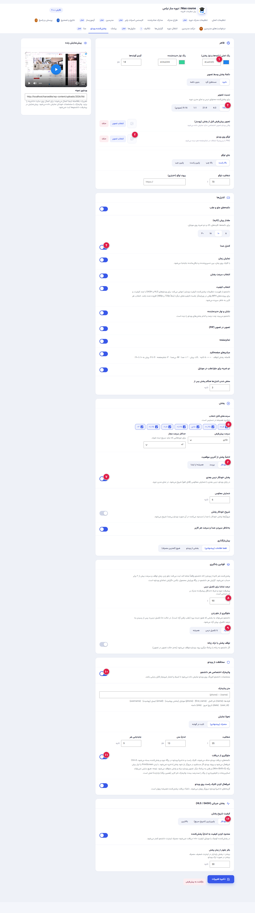
رنگبندی برند و نوار پخش (Accent Color)
کلید سیستم:nias_player_accent
رنگ دکمههای کنترل، نوار پیشرفت و آیکونها متناسب با رنگ سازمانی وبسایت شما ست میشود.
نسبت تصویر (Aspect Ratio) و استایل دکمه
کلید سیستم:nias_player_ratio
تغییر کادر ویدئو برای ویدئوهای استاندارد مانیتور، سینمایی یا دورههای مخصوص موبایل (استوری و ریلز عمودی). دکمه پلی در وسط نیز قابلیت گرد، مربعی یا مخفی بودن دارد.
لوگوی اختصاصی روی ویدیو
کلید سیستم:nias_player_logo
میتوانید واترمارک تصویری لوگوی آموزشگاه خود را در گوشه بالا یا پایین ویدیو بیندازید و شفافیت آن را تعیین کنید تا مزاحم دیدن ویدیو نباشد.
کنترلهای پیشرفته پخش
کلید سیستم:nias_player_ctrl_*
شامل دکمه پرش به جلو/عقب (۵، ۱۰، ۱۵ یا ۳۰ ثانیه)، تنظیم صدا، دکمه تغییر کیفیت، حالت تصویر در تصویر (PiP)، تمام صفحه و کلیدهای میانبر کیبورد (Space، کلیدهای جهتی، F برای فولاسکرین، M برای میوت).
سرعتهای مجاز پخش (Playback Speeds)
کلید سیستم:nias_player_speeds
کاربران میتوانند ویدیو را سریعتر یا کندتر گوش دهند. آخرین سرعت انتخابی کاربر در مرورگر ذخیره میگردد تا در ویدیوهای بعدی هم اعمال شود.
ادامه پخش از آخرین نقطه (Resume Playback)
کلید سیستم:nias_player_resume
اگر کاربر وسط ویدیو صفحه را ببندد، دفعه بعد پلیر دقیقاً از همان ثانیه ادامه پیدا میکند و کاربر وقت خود را برای پیدا کردن دقیقه درس تلف نمیکند.
پخش خودکار جلسه بعدی (Auto Next)
کلید سیستم:nias_player_auto_next
در انتهای جلسه، یک شمارش معکوس شبیه یوتیوب نمایش داده میشود و در صورت عدم لغو، درس بعدی به صورت خودکار شروع به پخش میکند.
درصد مشاهده جهت تکمیل جلسه
کلید سیستم:nias_video_complete_pct
دانشجو باید حداقل این مقدار از ویدیو را نگاه کند تا تیک سبز تکمیل جلسه بخورد و به درصد پیشرفت کل دوره و شرایط دریافت مدرک اضافه شود.
قفل نوار جلو بردن (Seek Lock)
کلید سیستم:nias_player_seek_lock
اگر روی «تا زمان تکمیل جلسه» بگذارید، دانشجو در بار اول نمیتواند نوار ویدیو را جلو بکشد و مجبور است ویدیو را ببیند. پس از یکبار دیدن کامل، نوار آزاد میشود.
واترمارک داینامیک و متحرک ضد سرقت
کلید سیستم:nias_video_watermark
شماره موبایل، نام و ایمیل کاربر را به صورت محو روی تصویر چاپ میکند که هر چند ثانیه یکبار موقعیت آن عوض میشود. اگر کسی از مانیتور با گوشی فیلم بگیرد، مشخصاتش روی فیلم میافتد.
جلوگیری از دانلود و ضبط مانیتور
کلید سیستم:nias_player_no_download
دکمههای ذخیره مرورگر را حذف میکند، منوی کلیک راست روی ویدئو را قفل میکند و در صورت زدن کلید پرینتاسکرین یا کلیدهای ضبط، تصویر ویدیو را موقتاً سیاه میکند.
پخش جریانی استریم (HLS / DASH)
کلید سیستم:nias_player_hls_*
پشتیبانی کامل از فایلهای m3u8 و mpd با سوییچ هوشمند کیفیت بر اساس سرعت اینترنت کاربر، و عدم دانلود کیفیتهای بالا در صفحات کوچک موبایل.
۳. تنظیمات مدرک دوره (Certificates)
قوانین احراز صلاحیت، تولید گواهیهای استاندارد PDF و اعتبارسنجی آنلاین.
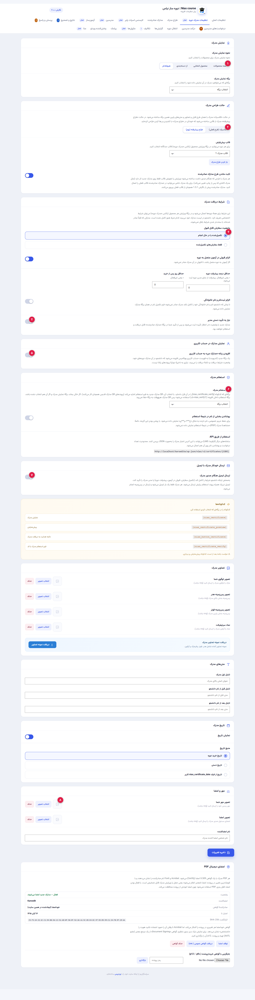
نحوه نمایش مدرک
کلید سیستم:certificate_display_type
مشخص میکند چه دورههایی قابلیت اعطای مدرک دارند. میتوانید فقط دورههای جامع و تخصصی را انتخاب کنید تا مدرک برای دورههای کوتاه صادر نشود.
حالت طراحی مدرک (دیزاینر یا کلاسیک)
کلید سیستم:certificate_design_mode
در حالت کلاسیک از قالب پیشفرض با بارگذاری تصویر هدر و فوتر استفاده میشود. در حالت دیزاینر وارد محیط بوم طراحی ویژوال میشوید.
شرایط پیشنیاز صدور گواهینامه
کلید سیستم:certificate_cond_*
شامل: حداقل درصد پیشرفت دوره (مثلاً ۱۰۰٪ دیدن جلسات)، الزام به قبولی در آزمون پایان دوره، حداقل روزهای سپری شده از تاریخ ثبتنام (مثلاً برای دورههای ترمیک).
نیاز به تأیید دستی مدیر
کلید سیستم:certificate_cond_approval
در صورت فعال بودن، پس از تکمیل دوره توسط دانشجو مدرک مستقیماً صادر نمیشود، بلکه درخواست در بخش «مدارک صادرشده» در وضعیت «در انتظار تأیید» میرود تا مدیر مدارک هویتی دانشجو را چک کند.
زبانه «مدارک من» در حساب کاربری
کلید سیستم:certificate_account_endpoint
یک تب شیک به پنل کاربری اضافه میکند که لیست مدارک اخذ شده دانشجو همراه با دکمه دانلود PDF باکیفیت چاپ و لینک اشتراکگذاری در آن موجود است.
برگهٔ استعلام آنلاین مدرک
کلید سیستم:certificate_verify_page
برگهای که شامل کد کوتاه [nias_certificate_verify] است. هر گواهی یک QR Code و شناسه منحصربهفرد دارد که با اسکن آن توسط کارفرما، اصالت مدرک، نام دانشجو و تاریخ صدور تأیید میشود.
ارسال خودکار ایمیل همراه با پیوست PDF
کلید سیستم:certificate_email_on_issue
به محض صدور گواهینامه، ایمیل تبریک حاوی نام کاربر، نام دوره و کد رهگیری همراه با فایل PDF گواهی مستقیماً به ایمیل دانشجو ارسال میگردد.
مهر و امضای دیجیتال
کلید سیستم:certificate_seal_image
تصویر با کیفیت مهر رسمی آموزشگاه و امضای دستی مدیر یا مدرس که در پایین مدرک چاپ خواهد شد.
۴. طراح پیشرفته مدرک (Certificate Designer)
محیط بصری و بوم استاندارد A4 برای چیدمان المانهای داینامیک بدون نیاز به کدنویسی.
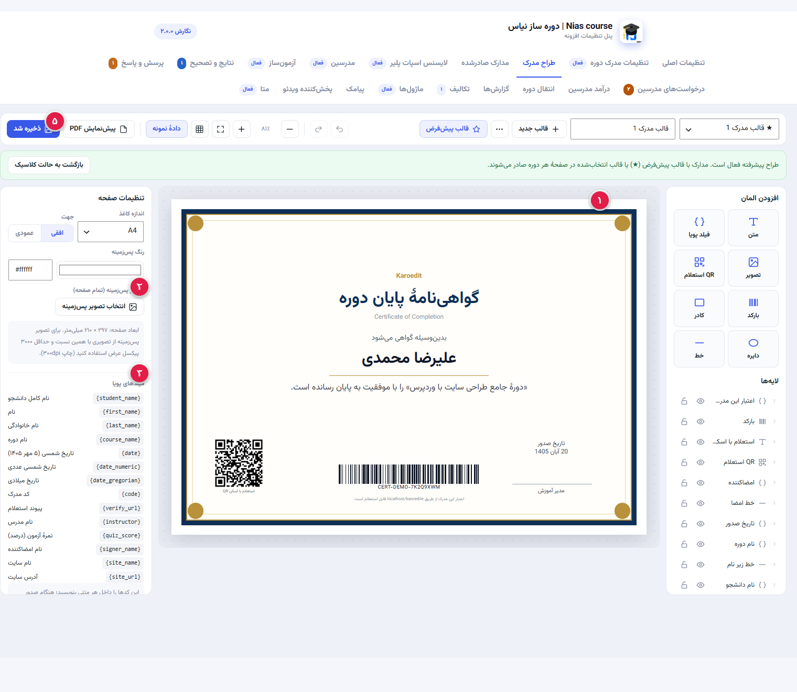
بوم استاندارد A4 افقی (Canvas)
کلید سیستم:cert_canvas
محیط کار با مقیاس واقعی برگه چاپ A4 طراحی شده است که با بالاترین کیفیت برداری و رزولوشن ۳۰۰dpi خروجی PDF تولید میکند.
آپلود تصویر پسزمینه خام (Background)
کلید سیستم:cert_bg_upload
میتوانید هر طرح سربرگ یا قالب طراحیشده در نرمافزارهای گرافیکی را بارگذاری کنید و فیلدها را دقیقاً روی خطوط و کادرهای آن منطبق سازید.
المانهای داینامیک و متغیرها
کلید سیستم:cert_elements
شامل نام و نام خانوادگی، عنوان دوره، تاریخ اتمام دوره، شناسه یکتا، نام مدرس، نمره قبولی در آزمون و متون دلخواه سفارشی.
تایپوگرافی، قلمها و رنگها
کلید سیستم:cert_typography
انتخاب قلمهای فارسی استاندارد، سایز از ۸ تا ۷۲ پیکسل، رنگ متن دلخواه و تراز افقی وسطچین، راستچین و چپچین.
ذخیره قالب و اتصال به دورهها
کلید سیستم:cert_save_template
طرح را با یک نام مشخص ذخیره کنید و در تنظیمات هر دوره در ووکامرس مشخص کنید که فارغالتحصیلان آن دوره کدام قالب را دریافت کنند.
۵. یکپارچهسازی با اسپات پلیر (SpotPlayer)
اتصال مستقیم سایت به وبسرویس پلتفرم قفل و ضد ضبط اسپاتپلیر.
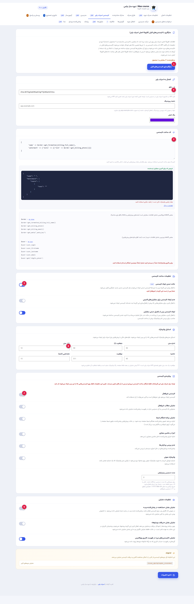
سازگاری با لایسنسهای قبلی (افزونهٔ اصلی اسپات پلیر)
کلید سیستم:nias_spot_legacy_*
اگر قبلاً از افزونه رسمی و مجزای اسپاتپلیر در سایت استفاده میکردید، این بخش لایسنسهای صادر شده قبلی کاربران را شناسایی کرده و آنها را با دورهساز نیاس ادغام و همگام میکند تا دانشجویان قدیمی دسترسی خود را از دست ندهند.
اتصال به وبسرویس اسپات پلیر (API Connection)
کلید سیستم:nias_spot_key / nias_spot_domain / nias_spot_color
مهمترین بخش اتصال افزونه به پنل اسپاتپلیر است. شامل ۳ فیلد کلیدی:
• کلید API: کلید احراز هویت وبسرویس اسپاتپلیر
• دامنه ریبرندینگ: آدرس اختصاصی پخشکننده تحت وب با برند شما (مثلاً player.site.com)
• رنگ اصلی: رنگ سازمانی دکمهها و المانهای ظاهری در لایسنسهای ساختهشده.
کد ساخت لایسنس (License Generation Code)
کلید سیستم:nias_spot_code
کد سفارشی هوشمند برای تعیین ساختار تولید لایسنس هنگام تکمیل سفارش؛ میتوانید مشخصات متغیر کاربر مثل شماره موبایل، نام و نقش را به لایسنس الصاق کنید.
تنظیمات ساخت لایسنس (Generation Settings)
کلید سیستم:nias_spot_test / nias_spot_old_orders / nias_spot_completed
کنترل دقیق شرایط تولید لایسنس در ووکامرس:
• حالت تستی (Test Mode): صدور لایسنس آزمایشی بدون کسر اعتبار برای ارزیابی عملکرد
• عدم ایجاد لایسنس برای سفارشهای قدیمی: جلوگیری از ساخت لایسنس ناخواسته برای خریدهای گذشته
• ایجاد لایسنس پس از تکمیل دستی سفارش: اگر سفارش را دستی روی تکمیلشده بگذارید هم لایسنس صادر میشود.
استایل و مشخصات واترمارک (Watermark Style)
کلید سیستم:nias_spot_wm_*
تنظیمات دقیق امنیتی چاپ مشخصات دانشجو روی فیلم در نرمافزار اسپاتپلیر:
• اندازه قلم، درصد شفافیت و میزان تکرار متن در تصویر
• موقعیت قرارگیری و مدت زمان جهش و جابجایی در صفحه (برحسب ثانیه) جهت جلوگیری از ضبط ویدیو با دوربین یا موبایل.
پیکربندی امنیت و محدودیتهای لایسنس (License Config)
کلید سیستم:nias_spot_confs_*
تنظیمات حفاظتی لایسنس صادرشده شامل:
• لایسنس غیرفعال و نمایش مطالب غیرفعال
• مسدودسازی ضبط فیلم و جلوگیری از نمایش برنامه هنگام اسکرین ریکورد
• ممنوعیت اجرا در ماشینهای مجازی (Virtual Machines)
• فعالسازی واترمارک صوتی هوشمند نامحسوس
• تعیین مدت اعتبار دسترسی پیشفرض به دوره.
تنظیمات نمایش در سایت و حساب کاربری (Display Settings)
کلید سیستم:nias_spot_view_*
تعیین نحوه تحویل دوره به خریدار در سایت:
• نمایش بخش «مشاهده در پخشکننده وب» (Web Player)
• حالت «فقط نمایش نگارش وب» بدون نیاز به نصب نرمافزار
• نمایش بخش لینکهای دانلود مستقیم نرمافزار برای ویندوز، مک و اندروید
• افزودن تب «لایسنسهای من» به منوی حساب کاربری ووکامرس.
۶. ماژولهای تکمیلی و اختصاصی (Pro Modules)
ابزارهای وفادارسازی، دورههای قطرهای، وبینارها، اشتراک زمانی و گیمیفیکیشن.
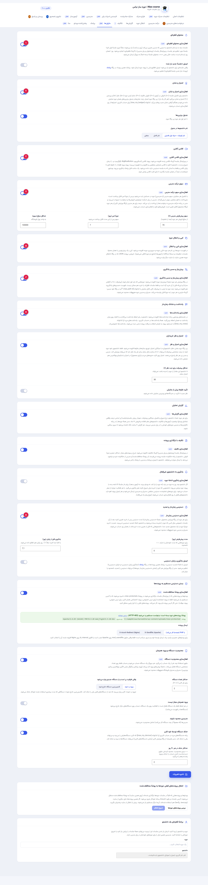
محتوای قطرهای (Drip Content)
کلید سیستم:nias_drip_enabled
جلسات دوره بلافاصله باز نمیشوند، بلکه مثلاً هر ۳ روز یک درس آزاد میشود تا دانشجو با تمرکز قدمبهقدم جلو برود.
امتیاز، نشان و جدول برترینها (Gamification)
کلید سیستم:nias_points_enabled
دانشجویان با دیدن هر جلسه، کسب نمره عالی در آزمون و ارسال نظر امتیاز میگیرند و در لیدربورد رتبهبندی میشوند.
کلاس آنلاین و وبینار (Live Classes)
کلید سیستم:nias_live_enabled
تعریف جلسات زنده آنلاین در کنار جلسات ضبطشده سرفصلها همراه با تایمر معکوس ورود به کلاس و ورود خودکار بدون رمز.
سهم درآمد و تسویه با مدرس (Commission System)
کلید سیستم:nias_revenue_enabled
تعیین سهم مدرس از هر فروش (مثلاً ۶۰٪)، با در نظر گرفتن دوره امن ضمانت بازگشت وجه (مثلاً ۷ روز). مدرسان میتوانند درخواست تسویه ثبت کنند.
کپی و انتقال دورهها (Clone & Transfer)
کلید سیستم:nias_transfer_enabled
امکان دانلود یک فایل فشرده حاوی تمامی سرفصلها، آزمونها و لینکهای دوره و بارگذاری آن در یک سایت دیگر با یک کلیک.
پیشنیازها و مسیرهای یادگیری (Prerequisites & Paths)
کلید سیستم:nias_prereq_enabled
مشخص کنید کاربر برای دسترسی به دوره پیشرفته باید حتماً دوره مقدماتی را خریده یا تمام کرده باشد.
یادداشت و بوکمارک زماندار دانشجویان
کلید سیستم:nias_notes_enabled
دانشجو در حین تماشای ویدئو میتواند در ثانیهای خاص دکمه یادداشت را بزند و نکته خود را بنویسد؛ با کلیک روی یادداشت، ویدیو به همان ثانیه میپرد.
دسترسی زماندار و تمدید اشتراک دورهها
کلید سیستم:nias_access_enabled
به جای دسترسی مادامالعمر، اعتبار دورهها را مثلاً ۶ ماهه تعیین کنید. پس از پایان، دوره قفل شده و دانشجو برای ادامه باید محصول «تمدید اعتبار» را بخرد.
۷. مدیریت و پیشخوان مدرسین (Instructors)
تعریف اساتید، ساخت پیشخوان بدون دسترسی به ادمین و تفویض اختیارات.
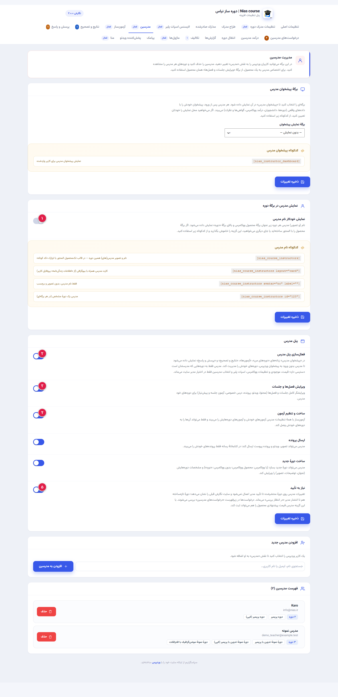
نمایش خودکار مشخصات مدرس در صفحه دوره
کلید سیستم:nias_inst_auto_show
نام، عکس پروفایل، رزومه و آیکون شبکههای اجتماعی مدرس در بالای صفحه محصول و سایدبار نمایش مییابد.
فعالسازی پیشخوان فرانتاند مدرس
کلید سیستم:nias_inst_panel
محیط کاربری اختصاصی برای اساتید بدون نیاز به ورود به ادمین پیشخوان وردپرس، تا بتوانند دورههای خود را مدیریت کنند.
اختیار ویرایش فصلها و جلسات
کلید سیستم:nias_inst_panel_curriculum
به مدرس اجازه میدهد جلسات جدید بیفزاید، ویدیوها را آپلود کند و توضیحات درسها را بنویسد.
اختیار ساخت و ویرایش کوئیزها
کلید سیستم:nias_inst_panel_quiz
مدرس میتواند برای درسهای دوره خود آزمون طرح کند و پاسخهای تشریحی دانشجویانش را نمرهدهی کند.
نیاز به تأیید تغییرات توسط مدیر (Moderation)
کلید سیستم:nias_inst_panel_approval
هر تغییری که مدرس روی دورههایش اعمال کند در وضعیت «در انتظار تأیید» قرار میگیرد و تا تأیید مدیر سایت در فرانتاند منتشر نخواهد شد.
۸. تنظیمات پیامک هوشمند (SMS Notifications)
اتصال به پترنهای پیامکی جهت ارسال آنی با خطوط خدماتی بدون بلاک شدن.
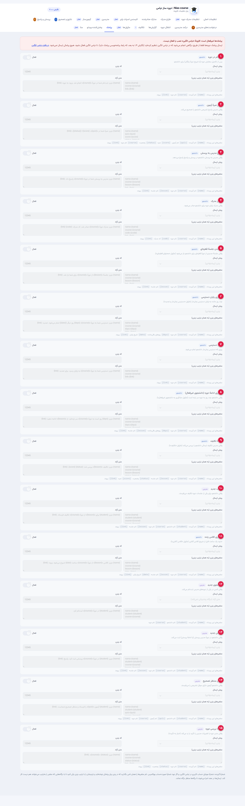
پیامک ثبتنام در دوره (به دانشجو)
کلید سیستم:sms[s_enrolled]
بلافاصله پس از تکمیل سفارش دوره در ووکامرس (یا ثبتنام در دوره رایگان)، پیامک تبریک حاوی نام دانشجو، نام دوره و لینک مستقیم ورود به آموزش برای خریدار مخابره میشود.
پیامک اعلام نمرهٔ آزمون (به دانشجو)
کلید سیستم:sms[s_essay_graded]
هنگامی که مدرس یا مدیر آزمونِ دانشجو را تصحیح میکند و پاسخهای تشریحی نمرهدهی میشوند، نتیجه، نمره نهایی و درصد قبولی برای دانشجو پیامک میشود.
پیامک پاسخ مدرس به پرسش (به دانشجو)
کلید سیستم:sms[s_qa_answered]
وقتی مدرس به تیکت یا سوال دانشجو در تب پرسش و پاسخ دوره جواب میدهد، یک پیامک همراه با لینک مستقیم مشاهده پاسخ به شماره همراه دانشجو ارسال میگردد.
پیامک صدور مدرک و گواهینامه (به دانشجو)
کلید سیستم:sms[s_certificate]
پس از به پایان رسیدن کامل جلسات و احراز شرایط، پیامکی حاوی کد استعلام یکتا و لینک دانلود مستقیم فایل PDF مدرک به دانشجو ارسال میشود.
پیامک باز شدن جلسهٔ قطرهای (به دانشجو)
کلید سیستم:sms[s_drip_open]
در دورههای دارای ماژول محتوای قطرهای (Drip Content)، به محض فرارسیدن موعد و باز شدن قفل جلسه یا فصل جدید، دانشجو با پیامک مطلع و به سایت دعوت میشود.
پیامک یادآوری پایان دسترسی زماندار (به دانشجو)
کلید سیستم:sms[s_access_expiring]
چند روز قبل از انقضای دسترسی دانشجو به دوره (مثلاً ۷ روز و ۱ روز قبل)، پیامک هشدار همراه با لینک خرید تمدید اشتراک ارسال میشود.
پیامک پایان مهلت دسترسی (به دانشجو)
کلید سیستم:sms[s_access_expired]
دقیقاً در روز پایان مهلت دوره زمانی، پیامک قفل شدن دسترسی و راهنمای بازگشایی مجدد برای دانشجو ارسال میگردد.
پیامک یادآوری ادامه دوره به دانشجوی غیرفعال
کلید سیستم:sms[s_inactive]
اگر دانشجو چند روز متوالی (مثلاً ۵ یا ۷ روز) به دوره سر نزند، سامانه پیامک انگیزشی خودکاری با نام آخرین درس دیده نشده برای او ارسال میکند تا به یادگیری برگردد.
پیامک نتیجه و تصحیح تکلیف (به دانشجو)
کلید سیستم:sms[s_assign_graded]
هنگامی که مدرس فایل تمرین یا تکلیف ارسالی دانشجو در ماژول تکلیف را بررسی و تأیید یا رد میکند، نتیجه با پیامک به دانشجو مخابره میشود.
پیامک دریافت تکلیف جدید (به مدرس)
کلید سیستم:sms[t_assign_new]
به محض اینکه دانشجویی تمرین یا فایل پروژه جدیدی برای یکی از جلسات آپلود کند، استاد پیامکی حاوی نام دانشجو و لینک تصحیح دریافت میکند.
پیامک یادآوری کلاس زنده / وبینار (به دانشجو)
کلید سیستم:sms[s_live_reminder]
حدود یک ساعت قبل از آغاز کلاس آنلاین (ماژول اسکایروم / وبینار)، پیامک یادآوری با لینک ورود مستقیم به اتاق کلاس به دانشجو ارسال میشود.
پیامک ثبتنام دانشجوی جدید (به مدرس)
کلید سیستم:sms[t_new_student]
هنگامی که مشتری جدیدی دوره استاد را خریداری میکند، پیامک اطلاعرسانی فروش جدید و نام خریدار برای مدرس ارسال میگردد.
پیامک ثبت پرسش جدید (به مدرس)
کلید سیستم:sms[t_new_question]
در صورت ثبت هرگونه سوال جدید در بخش پرسش و پاسخ، مدرس مربوطه سریعاً با پیامک مطلع میشود تا پاسخ دهد.
پیامک ارسال آزمون جهت تصحیح (به مدرس)
کلید سیستم:sms[t_essay_submitted]
وقتی دانشجو آزمونی با سوالات تشریحی ارسال میکند، پیامکی به مدرس ارسال میشود تا برای ثبت نمره به پنل مراجعه کند.
پیامک نتیجهٔ بررسی و انتشار دوره (به مدرس)
کلید سیستم:sms[t_course_reviewed]
هنگامی که مدرس دوره یا جلسه جدیدی تعریف میکند و منتظر بازبینی مدیریت است، به محض بررسی و تأیید یا ارسال بازخورد توسط مدیر سایت، وضعیت تایید یا رد دوره از طریق پیامک به شماره همراه مدرس اطلاعرسانی میشود.
۹. آزمونساز و تصحیح نتایج (Quiz Builder)
طراحی آزمونهای آنلاین با نمرهدهی اتوماتیک و تصحیح پاسخهای تشریحی.
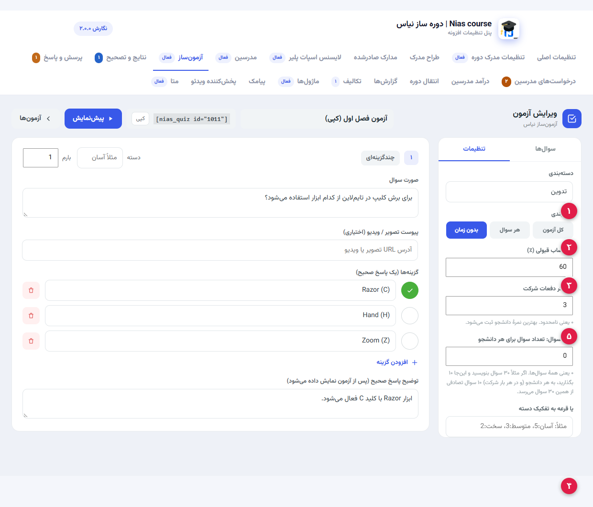
محدودیت زمان آزمون (Time Limit)
کلید سیستم:quiz_time_limit
تعیین تایمر معکوس برای شرکت در آزمون (مثلاً ۳۰ دقیقه). با اتمام وقت، آزمون به صورت خودکار ثبت و ارسال میشود.
حداقل نمره قبولی (Passing Score)
کلید سیستم:quiz_passing_score
تعیین شرط قبولی که مستقیماً به ماژول مدرک دوره متصل است؛ در صورت کسب نمره کمتر، دانشجو مردود اعلام میشود.
تعداد دفعات مجاز شرکت (Attempts Allowed)
کلید سیستم:quiz_attempts
میتوانید اجازه دهید دانشجو فقط ۱ بار یا مثلاً ۳ بار در آزمون شرکت کند. نمرات تمام تلاشها در پنل مدیر ذخیره میشود.
ترتیب تصادفی سوالات و گزینهها
کلید سیستم:quiz_randomize
هر بار که دانشجو آزمون را باز میکند، ترتیب سوالات و چینش گزینههای الف، ب، ج، د جابجا میشود تا تقلب غیرممکن گردد.
بانک سوالات و تنوع انواع تست
کلید سیستم:quiz_question_types
امکان افزودن تصویر برای هر سوال، امتیاز اختصاصی به ازای هر تست، و نوشتن توضیح پاسخنامه بعد از اتمام امتحان.
۱۰. ویرایشگر تمامصفحه سرفصلها (Curriculum Builder)
محیط تخصصی طراحی فصول و جلسات دوره با درگ اند دراپ و امکانات چندرسانهای.
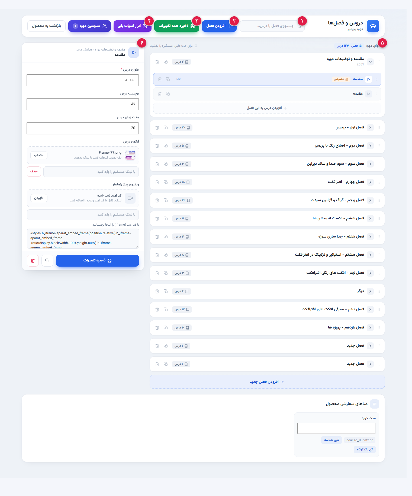
نوار جستجوی سریع فصول و جلسات (Quick Search)
کلید سیستم:#nc-search-input
امکان فیلتر و جستجوی آنی در بین صدها جلسه و فصل دوره بر اساس عنوان، کلمات کلیدی یا نوع محتوا بدون معطلی و رفرش صفحه.
دکمه «افزودن فصل جدید» (Add Chapter)
کلید سیستم:#nc-add-chapter-top
ایجاد سرفصل و فصل جدید در ساختار آموزشی دوره؛ میتوانید نام فصل، توضیحات مختصر و آیکون اختصاصی فصل را تنظیم فرمایید.
دکمه «ذخیره تمامی تغییرات» (Save All Changes)
کلید سیستم:#nc-save-all
ثبت همزمان و آنی تمامی فصول، جلسات جدید، ویدیوها، فایلها و تغییرات متنی در پایگاه داده بدون نیاز به بارگذاری مجدد برگه و با تضمین عدم پرش دادهها.
ابزارهای یکپارچه اسپات پلیر (SpotPlayer Tools)
کلید سیستم:#nc-spot-open
باز کردن جعبهابزار پیشرفته اسپاتپلیر در همان صفحه ویرایش سرفصلها؛ شامل وارد کردن سریع جلسات با افزونه کروم، تعیین شناسه دوره و همگامسازی فایلها.
ستون فهرست درختی سرفصلها (Curriculum Tree)
کلید سیستم:.nc-list-col / #nc-list
ستون سمت راست که تمام فصلها و درسها را با آیکونهای نوع محتوا (ویدئو، صوت، متن، فایل یا آزمون) نشان میدهد؛ هر آیتم قابلیت کشیدن و مرتبسازی روان دارد.
پنل اختصاصی ویرایشگر درس (Lesson Editor Panel)
کلید سیستم:#nc-editor / #nc-ed-fields
محیط اصلی کار روی درس انتخابی؛ شامل درج عنوان جلسه، مدت زمان، سوئیچ رایگان/پیشنمایش، آدرس منبع ویدئو (مستقیم، HLS، آپارات، اسپات)، آپلود فایلهای تمرینی و ادیتور متنی پیشرفته وردپرس (TinyMCE).
۱۱. تنظیمات دوره در ووکامرس (Product Course Meta)
گزینهها و فیلدهای اختصاصی که در صفحه ویرایش محصول ووکامرس فعال میشوند.
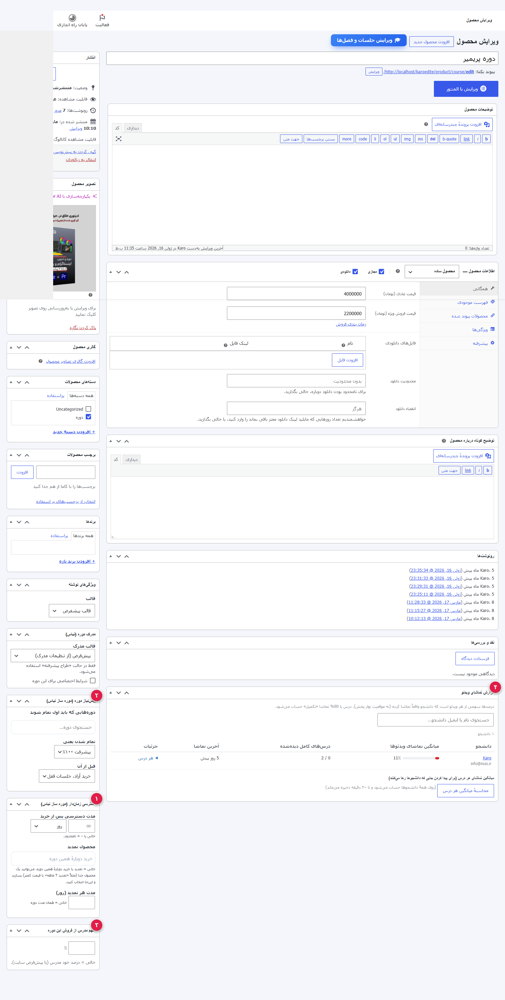
دسترسی زماندار این محصول (Time-limited access)
کلید سیستم:_nias_access_len
مشخص میکند دسترسی خریدار به این دوره چقدر اعتبار دارد (مثلاً ۹۰ روز) و اگر تمام شد، خرید کدام محصول اعتبار آن را تمدید میکند.
پیشنیازهای اختصاصی این دوره (Prerequisites)
کلید سیستم:_nias_prereq_ids
تعیین دورههای لازمی که دانشجو قبل از این دوره باید آنها را پشت سر گذاشته باشد.
سهم اختصاصی مدرس برای این دوره
کلید سیستم:_nias_rev_rate
اگر این دوره قرارداد مالی متفاوتی با مدرس دارد، درصد اختصاصی آن را در این فیلد وارد میفرمایید.
گزارش تماشای ویدئو (Watch Tracking Report)
کلید سیستم:_nias_watch_report
مشاهده اینکه دانشجو چند بار هر جلسه را نگاه کرده، تا چه دقیقهای جلو رفته و آیا درس را به اتمام رسانده یا خیر.
متاهای سفارشی محصول (Custom Meta)
کلید سیستم:_nias_meta_*
اطلاعات اضافی مانند پیشنیاز سختافزاری، نوع پشتیبانی یا زبان دوره که با کد کوتاه [nias_meta key="..."] در هر جای قالب لود میشوند.
۱۲. ابزارکها و تنظیمات المنتور (Elementor Widgets)
کنترل کامل بر طراحی بصری دورهها در صفحهساز محبوب المنتور.
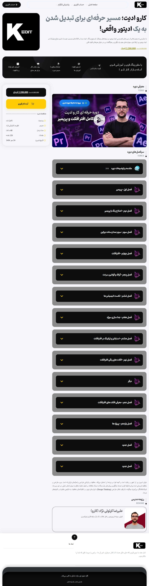
ابزارک اختصاصی «دوره نیاس» (Nias Course)
کلید سیستم:nias_course
امکان قرار دادن تمام یا بخشهایی از صفحه دوره در هر جای قالب المنتور با انتخاب شناسه محصول.
سوئیچهای نمایش / پنهانسازی بخشها
کلید سیستم:show_thumbnail, show_video, show_price ...
میتوانید تکتک بخشهای قیمت، دکمه خرید، سرفصلها، مدرس، مدت زمان، تعداد دانشجو، نظرات، آزمون و مدرک را خاموش یا روشن کنید.
سبک نمایش مدرن یا کلاسیک
کلید سیستم:display_style
سبک مدرن دارای محیط یادگیری متمرکز است و سبک کلاسیک چیدمان استاندارد ووکامرسی با تبهای زیرین را ارائه میدهد.
ابزارک «مدرسین دوره نیاس» (Nias Course Instructors)
کلید سیستم:nias_course_instructors
نمایش کارتهای اساتید به شکل شبکهای، لیستی یا اسلایدر متحرک چرخشی همراه با عکس، بیوگرافی و شبکههای اجتماعی.
کنترلهای استایل، رنگها و گردی گوشهها
کلید سیستم:primary_color, border_radius ...
شخصیسازی دقیق فونتها، رنگ پسزمینه کارتها، سایهها و شعاع گردی گوشهها بدون نیاز به حتی یک خط کدنویسی CSS.
13. پنل مدرس (Instructor Dashboard)
پنل تمامصفحهای مدرس در سایت که با شورتکد [nias_instructor_dashboard] یا بهصورت خودکار روی برگهٔ انتخابی «مدیریت مدرسین» باز میشود؛ درآمد، دورهها، دانشجویان، پرسشها و صف تصحیح را در یک صفحه جمع میکند.
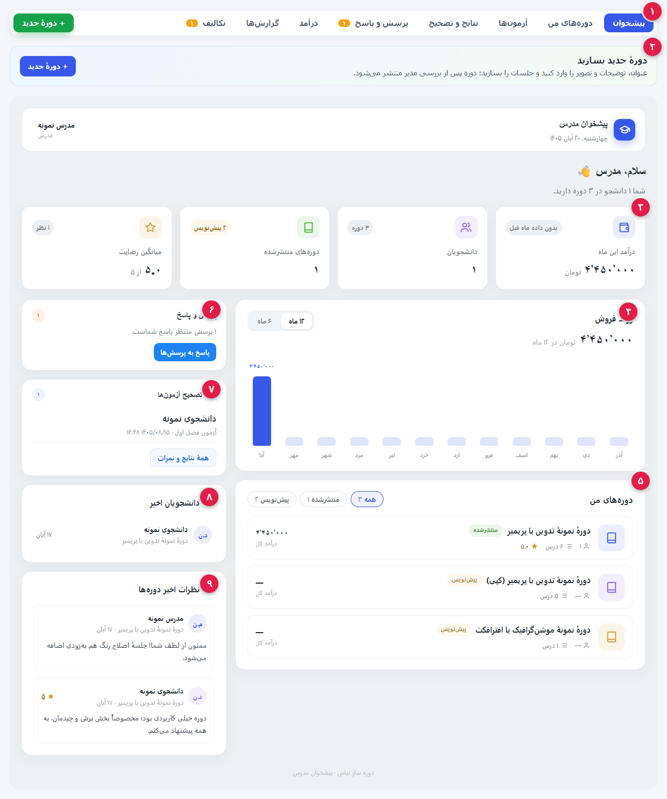
نوار ناوبری پنل مدرس
شورتکد[nias_instructor_dashboard] + نقش nias_instructor
همهٔ بخشهای پنل از همین نوار باز میشوند: پیشخوان، دورههای من، آزمونها، نتایج و تصحیح، پرسش و پاسخ، درآمد، گزارشها و تکالیف. شمارندهٔ نارنجی کنار «پرسش و پاسخ» و «تکالیف» تعداد موارد منتظر بررسی را نشان میدهد.
شروع سریع: ساخت دورهٔ جدید
جعبهٔ.nip-start + دکمهٔ «+ دورهٔ جدید»
جعبهٔ زیر نوار ناوبری، مسیر ساخت دوره را توضیح میدهد و دکمهٔ «+ دورهٔ جدید» فرم عنوان، توضیحات، تصویر شاخص و ساخت درسها را باز میکند.
کارتهای شاخص عملکرد (KPI)
درآمد این ماه · دانشجویان · دورههای منتشرشده · میانگین رضایتچهار کارت بالای پیشخوان، خلاصهٔ عملکرد مدرس را با عدد فارسی و مقایسه با ماه قبل (برچسب «بدون داده ماه قبل» یا درصد رشد/افت) نشان میدهد.
روند فروش
نمودار میلهای ماهانهنمودار فروش ماهبهماه با جمع مبلغ در بازهٔ انتخابی؛ کلید «۶ ماه / ۱۲ ماه» بازه را عوض میکند و جمع مبلغ بالای نمودار همزمان بهروز میشود.
دورههای من
فیلتر همه / منتشرشده / پیشنویسهر دورهٔ مدرس با وضعیت (منتشرشده/پیشنویس)، تعداد درس، امتیاز و درآمد کل فهرست میشود؛ فیلترها تعداد هر وضعیت را نشان میدهند و هر ردیف به ویرایشگر سرفصلهای همان دوره وصل است.
پرسش و پاسخ دورهها
پارامتر?nias_qa=1
تعداد پرسشهای بیپاسخِ دورههای مدرس و دکمهٔ «پاسخ به پرسشها» که صفحهٔ کامل پرسشوپاسخ را در همین پنل باز میکند.
صف تصحیح آزمونها
پارامتر?nias_qr=1
آزمونهای تشریحیِ منتظر تصحیح با نام دانشجو و فصل/درس؛ دکمهٔ «نمات و نتایج» به صفحهٔ نتایج و نمرهدهی میرود.
دانشجویان اخیر
آخرین ثبتنامهافهرست کوتاه آخرین دانشجویانی که در دورههای مدرس ثبتنام کردهاند، همراه نام دوره و تاریخ.
نظرات اخیر دورهها
دیدگاه و امتیاز ستارهایآخرین دیدگاههای ثبتشده روی دورههای مدرس با امتیاز ستارهای، برای پاسخدادن یا بررسی کیفیت دوره.
14. پنل کاربری دانشجو (دورههای من)
تب «دورههای من» در حساب کاربری ووکامرس، دورههای خریداریشدهٔ دانشجو را بهصورت کارتی نشان میدهد و راه ورود به نمایش مدرن هر دوره است. در تصویر، منوی کامل حساب کاربری ووکامرس هم دیده میشود.
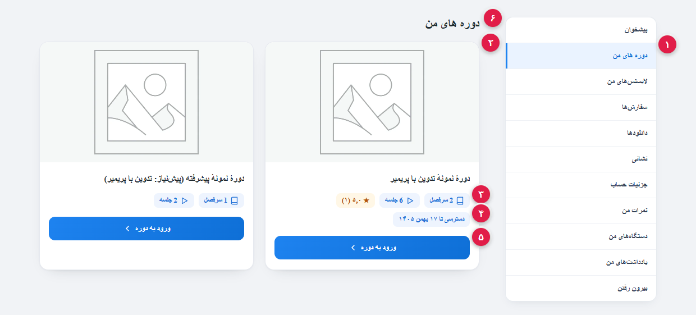
عنوان «دوره های من»
endpointmy-courses — آپشن nias_course_endpoint
برگهٔ حساب کاربری یک آیتم «دورههای من» میگیرد که آدرس پیشفرضش /my-account/my-courses/ است. این آیتم فقط وقتی «نمایش دورهها در حساب کاربری» در تنظیمات اصلی روشن باشد اضافه میشود.
کارت هر دوره
کلاس.nias-course-card
هر دورهٔ خریداریشده یک کارت با تصویر شاخص، عنوان دو خطی و افکت شناور دارد؛ کلیک روی کارت یا دکمهٔ پایین، نمایش مدرن همان دوره را باز میکند.
چیپ سرفصل و جلسه
متایcourse_sections
تعداد فصل و جلسه از متای سرفصلهای همان دوره خوانده میشود؛ دورهای که هیچ سرفصلی ندارد در این فهرست نمایش داده نمیشود.
وضعیت و اعتبار دسترسی
قلابnias_course_card_meta
چیپهای تکمیلی مثل امتیاز دوره و «دسترسی تا ...» از همین قلاب به کارت اضافه میشوند؛ اگر «دسترسی زماندار» برای دوره فعال باشد، تاریخ پایان دسترسی همینجا دیده میشود.
دکمهٔ «ورود به دوره»
لینک?nias_modern=1
دکمهٔ آبی پایین کارت، مستقیم نمایش مدرن دوره را باز میکند. برای کاربری که دسترسی ندارد یا وارد نشده، همان صفحه پیام مناسب (ورود یا خرید) را نشان میدهد.
[nias_purchased_courses] استفاده کنید.منوی کامل حساب کاربری
کلاس.woocommerce-MyAccount-navigation
در کنار محتوای دورهها، منوی استاندارد ووکامرس نمایش داده میشود: پیشخوان، دورههای من، لایسنسهای من، سفارشها، دانلودها، نشانی، جزئیات حساب، نمرات من، دستگاههای من، یادداشتهای من و خروج. آیتم فعال با پسزمینهٔ روشن مشخص میشود.
15. صفحهٔ نمایش دورهٔ مدرن (Modern Course View)
وقتی گزینهٔ «دورهٔ مدرن» در تنظیمات اصلی روی auto باشد، برگهٔ محصول دوره به این نمایش تکصفحهای تبدیل میشود: هدر دوره، سرفصلهای کنار صفحه، پخشکننده/متن درس و زبانههای درس.
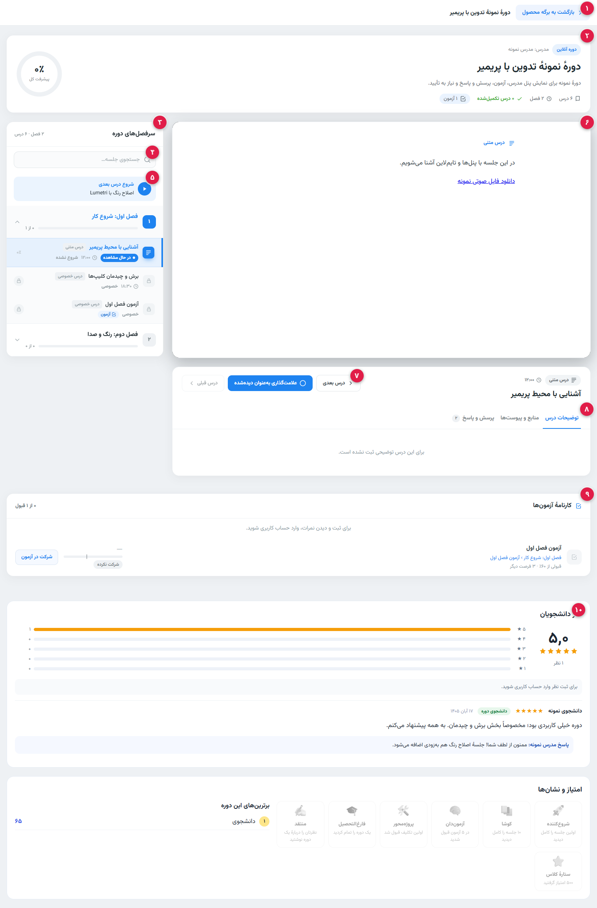
نوار بالای صفحه
کلاس.nmc-sa-bar
دکمهٔ «بازگشت به برگه محصول» و عنوان دوره در بالاترین نوار صفحه؛ در حالت خودکار این نمایش جایگزین قالب برگهٔ محصول میشود (برای صفحهٔ دلخواه هم شورتکد [nias_modern_course] هست).
کارت هدر دوره
کلاس.nmc-card.nmc-header
برچسب «دورهٔ آنلاین»، نام مدرس، عنوان و خلاصهٔ دوره، چیپهای تعداد درس/فصل/تکمیلشده/آزمون و حلقهٔ «پیشرفت کل» که درصد کل تماشای دوره را نشان میدهد.
سرفصلهای دوره
کلاس.nmc-side
فصلها و جلسات با آیکون نوع (متن/ویدیو/آزمون/قفل)، مدت هر جلسه و نوار پیشرفت هر فصل؛ جلسهای که باز است هایلایت میشود و جلسات قفل با آیکون قفل و شرط باز شدن نمایش داده میشوند.
جستجوی جلسه
کلاس.nmc-side-search
با تایپ در این کادر، فصلها و جلسات فیلتر میشوند و عبارت یافتشده هایلایت میشود؛ دکمهٔ ضربدر جستجو را پاک میکند.
ادامهٔ یادگیری
کلاس.nmc-continue
دکمهٔ «شروع درس بعدی» اولین جلسهٔ دیدهنشده یا نیمهکاره را باز میکند تا دانشجو از همانجا ادامه دهد.
ناحیهٔ محتوا
کلاس.nmc-stage
بسته به نوع جلسه، پخشکنندهٔ ویدیو (HLS یا اسپات پلیر)، متن درس، پخشکنندهٔ صوتی یا کارت دروازه (پیشنیاز، دسترسی زماندار، کلاس زنده، تکلیف، یادداشت) اینجا نمایش داده میشود.
ناوبری درس
کلاس.nmc-nav
«درس قبلی»، «علامتگذاری بهعنوان دیدهشده» و «درس بعدی»؛ دیدهشده کردن، درصد پیشرفت جلسه، فصل و کل دوره را همزمان بهروز میکند.
زبانههای درس
کلاس.nmc-tabs
سه زبانهٔ «توضیحات درس»، «منابع و پیوستها» و «پرسش و پاسخ» (با شمارندهٔ پرسشهای همان درس). پرسشهای این زبانه همان صف پرسشوپاسخ پنل مدرس را تغذیه میکنند.
کارنامهٔ آزمونها
کلاس.nmc-grades
برای هر آزمون دوره، نمرهٔ دانشجو، وضعیت قبولی/شرکتنکرده و دکمهٔ شرکت در آزمون نشان داده میشود؛ ثبت و نمایش نمره نیاز به ورود کاربر دارد.
نظر دانشجویان
امتیاز و دیدگاههاخلاصهٔ امتیاز دوره (میانگین و تعداد)، توزیع ستارهها و فرم ثبت نظر. در ادامهٔ همین صفحه کارت «امتیاز و نشانها» با شورتکد [nias_my_badges] نشانهای گیمیفیکیشن دانشجو را نشان میدهد.
16. شرکت در آزمون و کارنامهٔ دانشجو
آزمونهای دوره هم در صفحهٔ اختصاصی آزمون و هم داخل نمایش مدرن دوره اجرا میشوند؛ نتیجهٔ هر تلاش در «کارنامهٔ آزمونها» و تب «کارنامه» حساب کاربری جمع میشود. تصویر اول حالت اجرای آزمون و تصویر دوم کارنامهٔ دانشجو است.
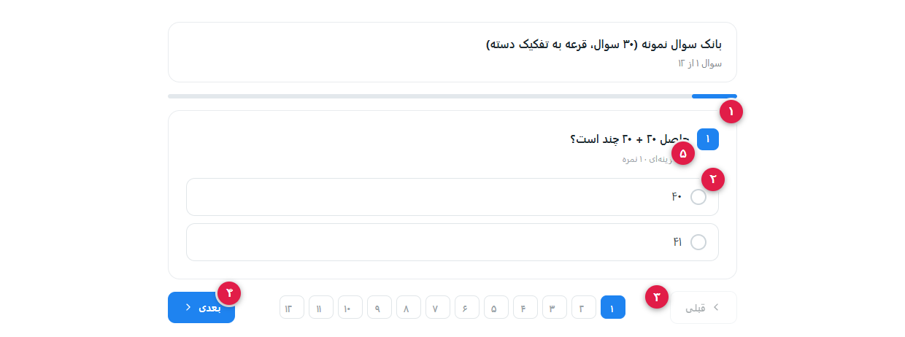
کارت سوال
کلاس.nqs-card.nqs-q
شمارهٔ سوال، متن سوال، نوع آن (چندگزینهای یا تشریحی) و نمرهٔ همان سوال در بالای کارت نمایش داده میشود. سوالهای تشریحی پس از ثبت، به صف تصحیح مدرس (بخش ۱۳) میروند.
گزینههای پاسخ
کلاس.nqs-opt
هر گزینه یک ردیف قابل کلیک است؛ تکپاسخی یا چندپاسخی بودنِ سوال از تنظیمات همان سوال میآید و ترتیب گزینهها در صورت روشن بودن «برزدن ترتیب» در آزمونساز (بخش ۹) تغییر میکند.
پالت شمارهٔ سوالها
کلاس.nqs-palette
همهٔ سوالهای آزمون بهصورت مربعهای شمارهدار فهرست میشوند؛ سوال جاری پررنگتر است و با کلیک روی هر شماره مستقیم به همان سوال میروید.
دکمههای قبلی و بعدی
کلاس.nqs-btn.next / .nqs-btn.prev
جابهجایی بین سوالها بدون رفتن به پالت؛ در سوال آخر دکمهٔ ثبت/پایان آزمون فعال میشود و نتیجه بهصورت خودکار ثبت و در کارنامه دیده میشود.
نوع سوال و نمرهٔ آن
کلاس.nqs-q-meta
زیر متن سوال نوشته میشود که سوال چندگزینهای یا تشریحی است و چند نمره دارد؛ جمع نمرات و حد نصاب قبولی از تنظیمات آزمون میآید.
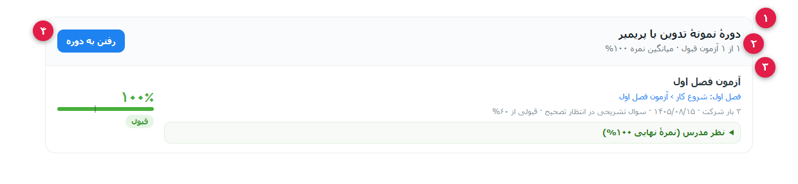
سربرگ دوره در کارنامه
کلاس.nqg-course
کارنامه به تفکیک دوره ساخته میشود: نام دوره و شمارش «چند از چند آزمون قبول» در سربرگ هر بلوک.
/my-account/my-grades/ است (اسلاگ آن از تنظیمات آزمونساز میآید) و با شورتکد [nias_my_grades] در هر برگهٔ دلخواه هم نمایش داده میشود.خلاصهٔ کارنامه
کلاس.nqg-sum
جمعبندی کوتاه دوره: تعداد آزمونهای قبولشده و میانگین بهترین نمرهها به درصد.
ردیف هر آزمون
کلاس.nqg-row
برای هر آزمون: نام آزمون و مسیر فصل/درس، نمره و وضعیت «قبول/قبولنشده»، تعداد بارهای شرکت و تاریخ آخرین تلاش، و در صورت وجود، «سوال تشریحی در انتظار تصحیح» و «نظر مدرس».
دکمهٔ «رفتن به دوره»
کلاس.nqg-go
از کارنامه مستقیم به نمایش مدرن همان دوره (بخش ۱۵) میروید تا آزمون را دوباره شرکت کنید یا جلسهٔ مربوط را ببینید.
17. پروفایل مدرس و ساخت دورهٔ جدید
مدرس اطلاعات حساب خود را در «جزئیات حساب» ویرایش میکند و از داخل پنل مدرس، بدون رفتن به پیشخوان وردپرس، دورهٔ تازه میسازد: عنوان، توضیحات، تصویر، قیمت (با تأیید ادمین) و سپس ساخت جلسات. تصویر اول پروفایل و تصویر دوم فرم «دورهٔ جدید» است.
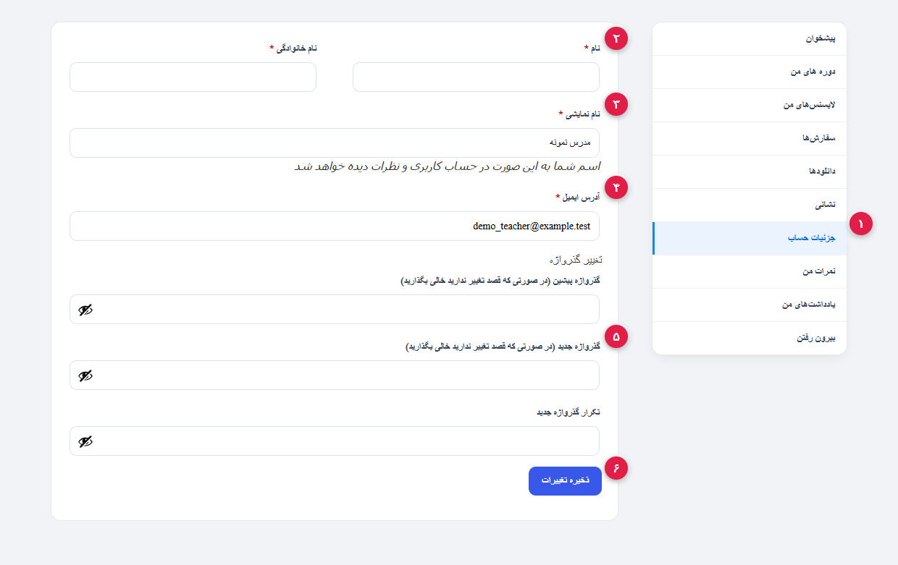
آیتم «جزئیات حساب»
کلاس.woocommerce-MyAccount-navigation-link.is-active
پروفایل مدرس همان صفحهٔ «جزئیات حساب» حساب کاربری ووکامرس است و در همان منوی کاملی قرار دارد که در بخش ۱۴ توضیح داده شد؛ آیتم فعال با پسزمینهٔ روشن مشخص میشود.
نام و نام خانوادگی
فیلدهایaccount_first_name / account_last_name
دو فیلد اجباری پروفایل؛ نام کامل مدرس در کارت مدرس و برگهٔ دوره از همین دو فیلد خوانده میشود.
نام نمایشی
فیلدaccount_display_name
نامی که در دیدگاهها و بخشهای عمومی سایت نمایش داده میشود؛ اگر خالی بماند از نام کوچک استفاده میشود.
آدرس ایمیل
فیلدaccount_email
ایمیل حساب کاربری؛ اعلان سفارش، پاسخ پرسش و پاسخ و نتیجهٔ آزمون به همین نشانی میرود. تغییر آن بلافاصله اعمال میشود.
گذرواژه
فیلدهایpassword_current / password_1
برای تغییر رمز، رمز فعلی و رمز جدید (دو بار) را وارد کنید؛ خالی گذاشتن این بخش یعنی رمز تغییری نمیکند.
ذخیرهٔ تغییرات
کلاس.woocommerce-Button
تغییرات پروفایل را ثبت میکند و پیام «جزئیات حساب با موفقیت تغییر کرد» را نشان میدهد.
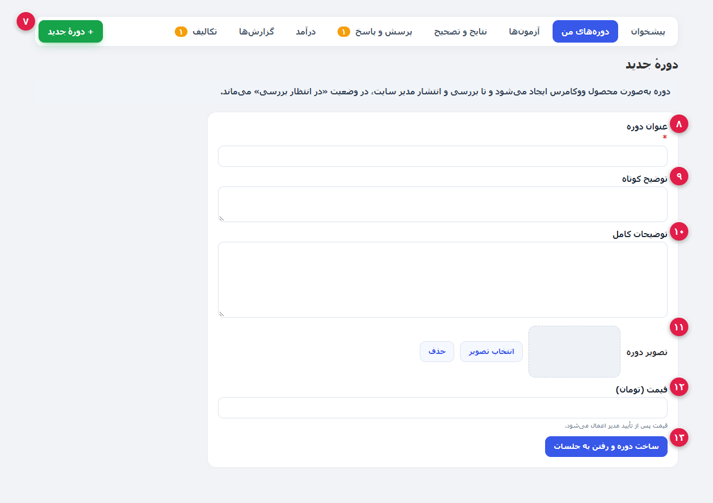
دکمهٔ «+ دورهٔ جدید»
کلاس.nip-new در نوار پنل
از نوار بالای پنل مدرس، فرم کامل ساخت دوره را باز میکند و تب «دورههای من» را فعال نگه میدارد.
عنوان دوره
فیلدtitle (اجباری، حداکثر ۲۰۰ کاراکتر)
عنوانی که روی محصول/دوره و در همهٔ کارتهای سایت نمایش داده میشود؛ بدون آن، ساخت دوره با خطای «عنوان دوره را وارد کنید» متوقف میشود.
توضیح کوتاه
فیلدexcerpt
خلاصهٔ دو سه خطی دوره که در کارت دوره و فهرست دورهها استفاده میشود.
توضیحات کامل
فیلدcontent
متن اصلی معرفی دوره؛ همان توضیحاتی که در برگهٔ دوره و نمایش مدرن (بخش ۱۵) دیده میشود.
تصویر دوره
کلاس.nip-img و دکمهٔ «انتخاب تصویر»
تصویر شاخص دوره از کتابخانهٔ رسانه انتخاب میشود (مدرس فقط فایلهای خودش را میبیند) و با «حذف» پاک میشود.
قیمت (تومان)
فیلدprice
فقط وقتی «تأیید ادمین» روشن باشد و دوره از نوع محصول ووکامرس ساخته شود نمایش داده میشود؛ قیمت بعد از تأیید مدیر اعمال میشود.
دکمهٔ «ساخت دوره و رفتن به جلسات»
کلاس.nip-btn.pri
دوره را میسازد و مستقیم ویرایشگر سرفصل و جلسات همان دوره را باز میکند تا درسها را اضافه کنید.